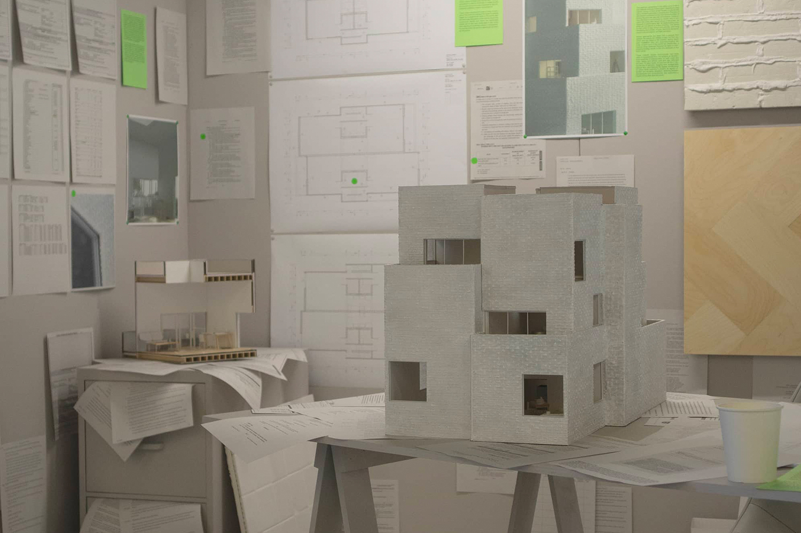

Jono Coles
b. 1997 Pittsburgh, PA
Jono Coles is an *rchitect whose work
critiques and repairs relationships between architectural practice and systems of value. He works between
traditional architectural practice, art practice, teaching, writing, and alternative development.
Exhibitions

Approaching Value
Jono Coles
May 2024